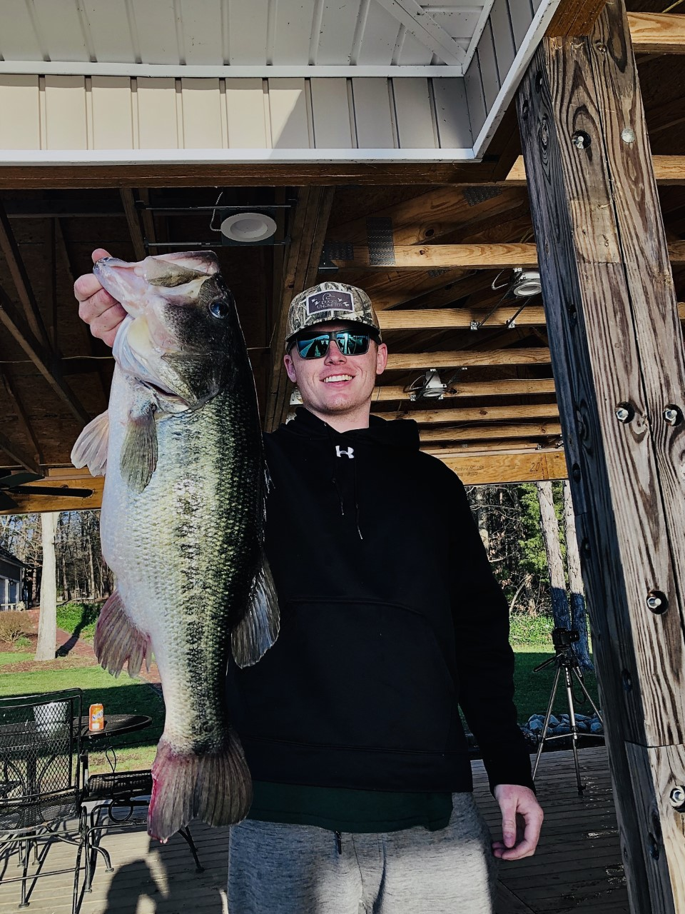

Home Page
Zachary Smith is a junior at The University of North Carolina at Chapel Hill. He is majoring in Communication Studies with a concentration in Media and Technology Production.
Zachary spends most of his free time either studying or on the water, fishing. He has been fishing since he was around three years old.
In recent years, Zachary has had the opportunity to travel the country pursuing some of the biggest largemouth ever caught on film.
